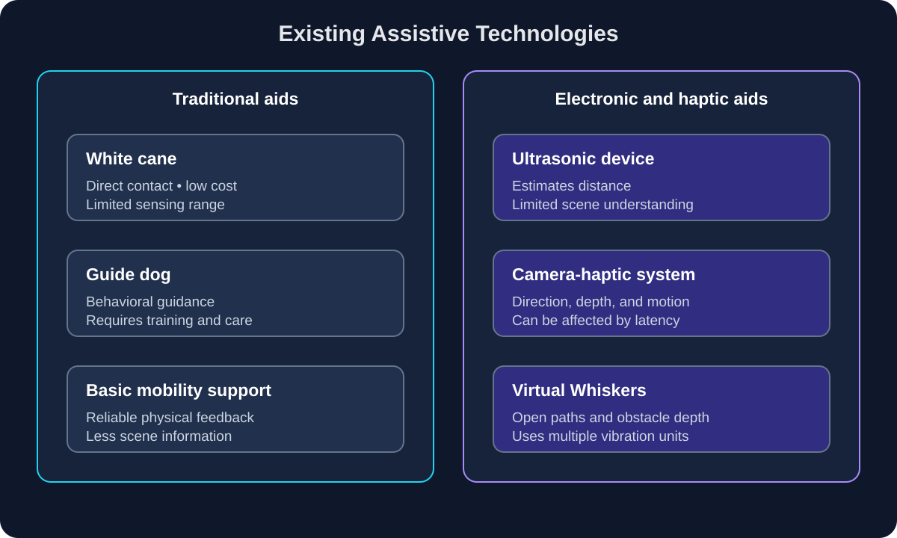

Existing technology
Existing Assistive Technologies
This section compares traditional mobility aids with electronic systems that use computer vision, distance sensors, and haptic feedback to provide spatial awareness for visually impaired users.
Traditional and electronic aids
White canes and guide dogs remain important mobility aids because they provide reliable assistance in real-world environments. However, electronic systems can supplement these tools by providing information about objects, open paths, and obstacles that may be outside the cane's immediate range.
For example, camera-based systems can estimate the position and distance of objects, while ultrasonic sensors can provide additional distance measurements. Kleinberg et al. describe a system that combines computer vision, ultrasonic sensing, machine learning, and haptic feedback for spatial orientation [1].

Figure 1. Comparison of traditional mobility aids and electronic vision-guided assistive systems. Diagram made with assistance from ChatGPT.
Comparison of assistive systems
| System | Strength | Limitation | Feedback type |
|---|---|---|---|
| White cane | Low cost, reliable, and provides direct physical information about nearby surfaces and obstacles. | Limited sensing range and limited information about objects outside the cane's contact area. | Direct physical contact |
| Guide dog | Can help navigate around obstacles and respond to a changing environment. | Requires training, care, and significant financial and personal commitment. | Behavioral and physical guidance |
| Ultrasonic device | Can estimate the distance to nearby objects using relatively simple hardware. | Usually cannot identify what an object is or understand complex scene context. | Vibration or audio alert |
| Camera-haptic system | Can estimate object identity, direction, motion, and scene context. | Performance can be affected by lighting, occlusion, processing delay, and detection errors. | Directional vibration patterns |
| Virtual Whiskers | Uses multiple vibration units to communicate open paths and obstacle depth to blind and low-vision users [2]. | Requires user training and additional wearable hardware. | Adaptive multi-channel vibration |
| Vision-based tactile system | Can convert visually measured contact information into haptic feedback for a human operator [4]. | More directly applicable to robot manipulation than independent pedestrian navigation. | Controller vibration or force feedback |
What can be learned from existing systems?
These systems show that haptic feedback can communicate different types of information depending on how the visual data is processed. A white cane provides direct contact information, while a camera-based system can provide estimates about objects and open space before physical contact occurs.
Virtual Whiskers demonstrates an obstacle-negotiation approach in which the system communicates either the most traversable direction or the location of prominent obstacles through separate haptic modes [2]. This is different from a basic object detector because the system transforms visual information into a navigation decision.
The main tradeoff is that more capable systems require more sensors, processing, power, and user training. Therefore, the best system is not necessarily the one that detects the most objects. It should provide information that the user can understand quickly and use safely.